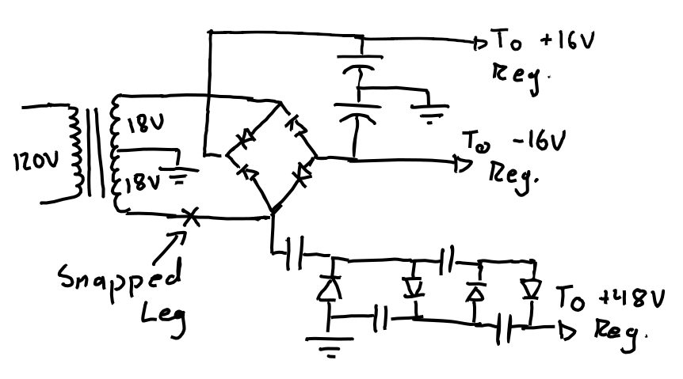
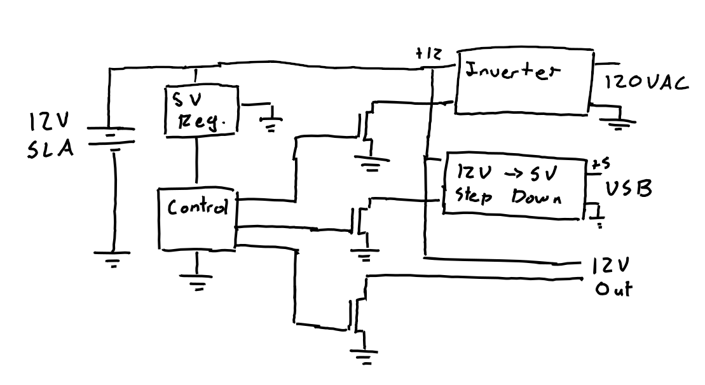
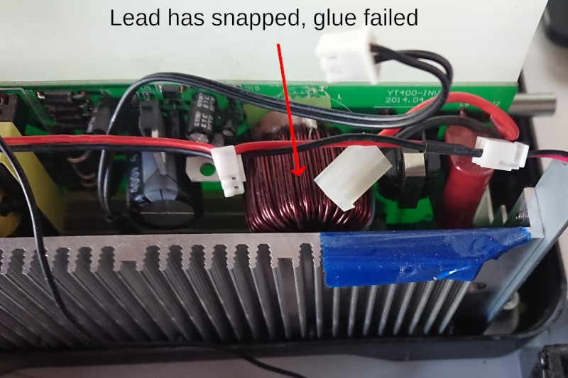
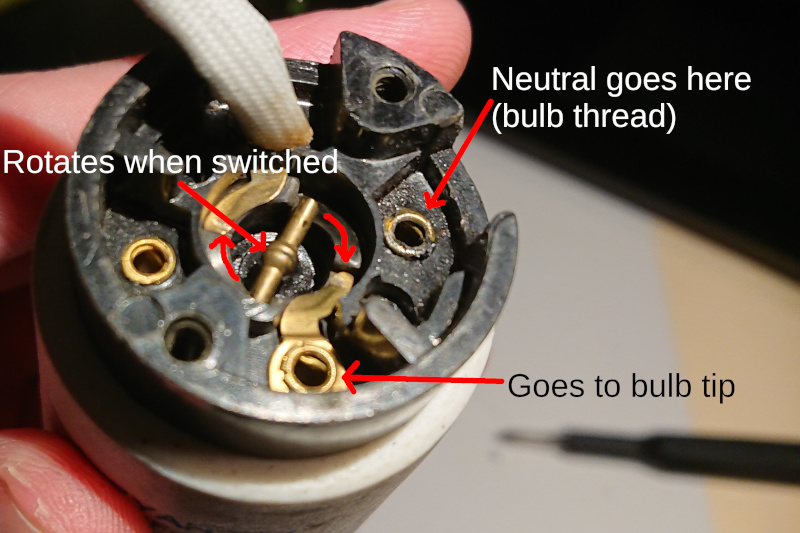
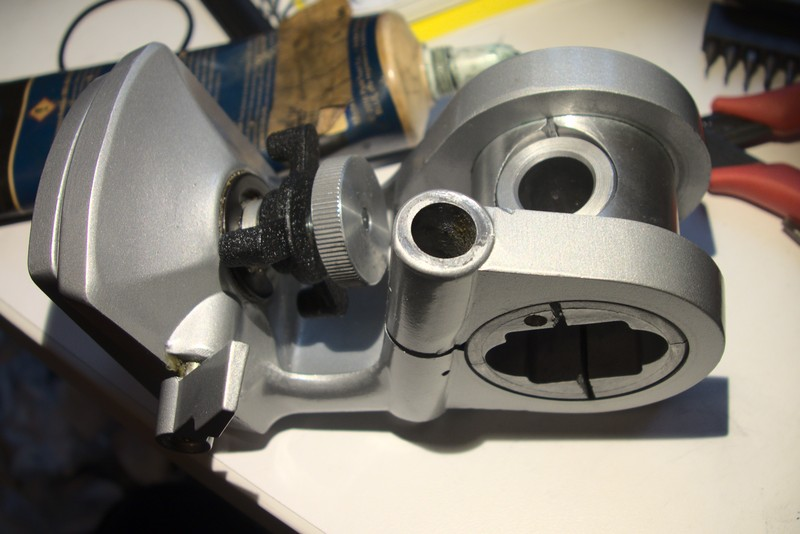
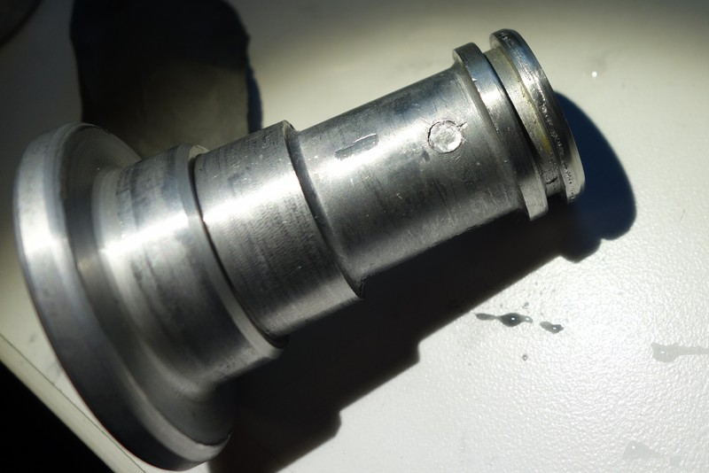

My landlord Ben had an API Lunchbox with a broken 48V phantom power supply and I offered to see if I could fix it. The Lunchbox is a power supply and case for modular pro audio equipment providing +16V, -16V and +48V. The power supply design is a standard linear power supply with a center tapped transformer, a rectifier, and some linear regulators. For the 48V line, one of the transformer legs is fed into a voltage multiplier then regulated with a LM317HVT linear regulator.
The transformer leg feeding the voltage multiplier had snapped. This both completely disconnected the voltage multiplier and turned the full wave rectifier into a half wave rectifier. Ben wasn't drawing enough current to cause any problems with only having half wave rectification, but the 48V line was completely non-functional. To fix it I just desoldered the transformer, added a bit of wire to bridge the gap and soldered it back in place.
The board design has the largish (maybe 3" x 3" x 1") transformer soldered directly to the PCB. With the lunchbox upright or on its side, the transformer is either hanging upside down or sideways. Since it's only held on by solder it's particularly susceptible to physical shock. If it fails again I think I'll find a way to mount the transformer elsewhere then run wires to it to take the strain off the solder joints.
My friend Cam bought a Yeti 400 Battery secondhand with a dead battery. It's a sealed lead acid battery with switchable 12V, 5V (USB) and 120V outputs. He got a new battery for it but it still didn't work. The 120V output was completely dead and while the 12V and 5V outputs worked, the system claimed they were drawing a lot of power.
The system can be grouped into several logical sections: A control section, the inverter section, and the 5V power supply. The control section controls the LCD/buttons, switches the MOSFETs controlling the 5/12/120V outputs and monitors their current draw.
The inverter issue was pretty straightforward to debug. It was its own board, so I disconnected it from the control board and powered it with my bench power supply. There was no output. Then I noticed one of the leads on an inductor had broken. I soldered it back and secured the inductor with hot glue (there are better alternatives to hot glue but it's what I had). I tried it again with the bench supply and it worked.
The other issue (the battery reporting more power being drawn) was trickier. I hooked up the board to my bench power supply and noticed that despite it claiming to be using 50+ watts it was actually drawing almost no current from the power supply. Furthermore I noticed that as I increased the power supply voltage, the reported (not actual) power draw went up until the board suddenly shut off. The board would shut off well before 14V which it should have handled just fine.
This made me think the issue was with the power supply for the control section. I followed the VCC line from the PIC microcontroller to an easy to probe spot and measured 9V on it. Yowza. I then started look at all the chips that might be voltage regulator (i.e. 3-5 pin devices) and found a HT7150, a 5V regulator with it's output attached to the VCC line. I replaced that with a LM78L05 and that fixed it. I'm not sure how long it will last given that the control board has been fed over twice it's max rated voltage for a while, but it works for now at least.

After fixing those two issues the battery appears to be 100% operational again.

My desk lamp started flickering when I turned it on and off. Turns out the switch contacts were dirty and a little deoxit fixed it. I thought the switch mechanism was neat so I figured I'd post a picture here. It's the type of desk lamp where you rotate a switch at the top to turn it on and off.
A spring connected to (and insulated from) the top of the switch presses the metal bar either against plastic (as pictured above) or connecting the two contacts. When you rotate the switch the bar also rotates up the ramps until it falls off the ends either against the contacts or plastic. It falling into its new state makes the satisfying click you hear. It also ensures turning it on/off happens quickly to reduce arcing. Technology Connections has a video on why you want your switches to be clicky.
I have a Slik tripod I bought at a flea market. It's served me well until last weekend when I took it camping for use with my new Astronomical Binoculars. While I could rotate it up and down, it seized up when rotating right/left.
I took it apart and used a wooden dowel to dislodge the stuck parts. They were very stubborn but eventually I was able to work them free with some help from some bike chain lube. Once it was all the way apart I cleaned up the bearing races and immediately found the problem: one of the bearings was extremely pitted.
I used some 400 then 2500 grit sandpaper to smooth out the races. After lubing it up with some bike grease it seems to be good as new.